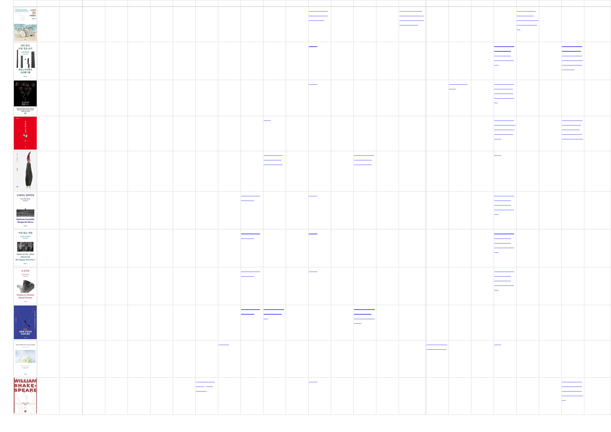

cover title category count last week chosun donga joins maekyung hankyung hani khan munhwa hankook kmib seoul segye moneytoday sec heraldbiz asiae yonhap news1 newsis insight readersnews
가보지 않은
여행기 (HMG
퍼블리싱)
여행 3 가상과 현실
오가며 엮은
상상 여행
괴테·위고·톨스
토이 명작의 ‘결
정적 그곳‘ 따라
지구 한바퀴
명작 명장면
만 훑는 호
사…감칠맛 나
는 인문학 여
행
새싹 뽑기, 어
린 짐승 쏘기
(문학과지성
사)
소설/시/희곡 3 새 책 진주 같은 고
전 다시 읽
기…문고본
‘문지 스펙트
럼‘
거장 오에 겐
자부로의 탄
생을 알린 작
품 ‘새싹 뽑기,
어린 짐승 쏘
기’ 출간
단 하나의 문
장 (문학동네)
소설/시/희곡 3 새 책 한눈에 읽는
신간
‘한 아이에게
온 마을이‘…
지나친 관심
은 공포가 된
다
성공한 인생
(요다)
소설/시/희곡 3 새책 수능 만점·아
이돌과 결혼…
일주일 중 하
루와 맞바꾼
다면
‘회색인간’ 김
동식 작가와
SBS의 파워
콜라보 ‘성공
한 인생’ 출간
유령 (현대문
학)
소설/시/희곡 3 죄의식 없는
청부살인자,
그의 과거는
악의 길이 운
명이었다는
사형수 474
신간
모데라토 칸
타빌레 (문학
과지성사)
소설/시/희곡 3 11월 9일 문
학 새 책
새 책 진주 같은 고
전 다시 읽
기…문고본
‘문지 스펙트
럼‘
이별없는 세
대 (문학과지
성사)
소설/시/희곡 3 11월 9일 문
학 새 책
새 책 진주 같은 고
전 다시 읽
기…문고본
‘문지 스펙트
럼‘
소설처럼 (문
학과지성사)
인문학 3 11월 9일 문
학 새 책
새 책 진주 같은 고
전 다시 읽
기…문고본
‘문지 스펙트
럼‘
문파, 새로운
주권자의 이
상한 출현 (메
디치미디어)
사회과학 3 11월 9일 출
판 새 책
같은 듯 다른
‘문빠’와 ‘문
파’
인터넷 좀비?
정치 팬덤?
‘문빠’는 누구
인가
우리는 저마
다의 속도로
슬픔을 통과
한다 (글항아
리)
인문학 3 책꽂이 애도 앞에 ‘왕
도‘는 없어요
신간
셰익스피어를
읽자 (엑스북
스(xbooks))
인문학 3 신간 다이제
스트 (11월
10일자)
새 책 심리학 책 같
은 소설책 읽
기 ‘셰익스피
어를 읽자’ 출
간